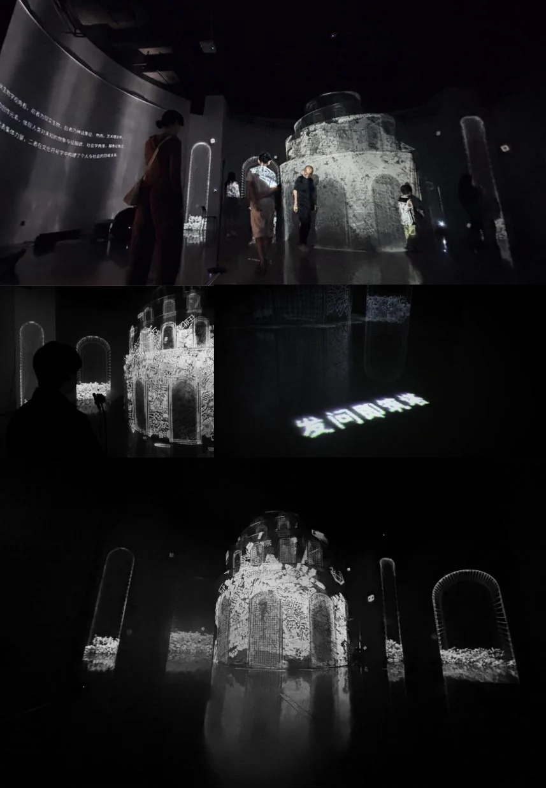
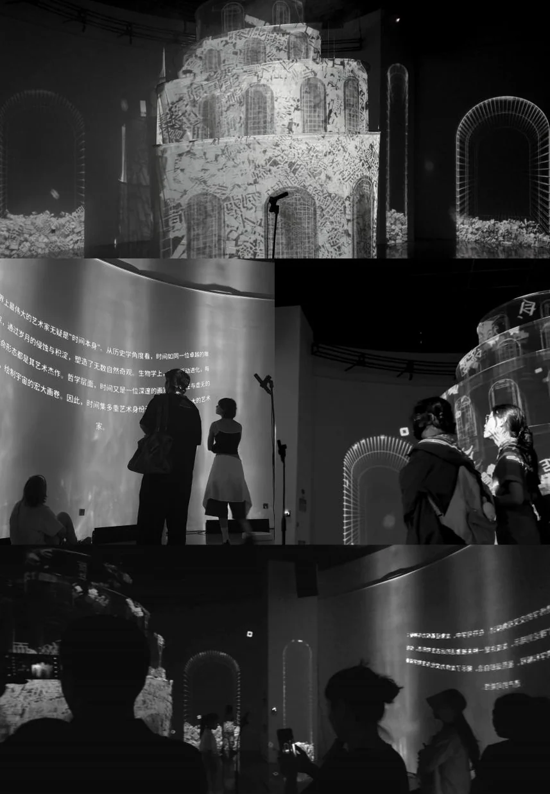
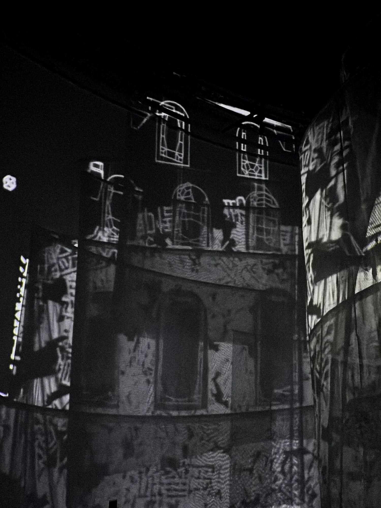

Libro de Justificación
辩白书
走进书塔中央，向 AI 发问——它为你辩护的话语从纱幕上落下，在你四周堆成高塔，又在下一次追问时坍塌。
作品以AI程序化的“输入指令—产生结果—形成交互”运作模式为切入点，将博尔赫斯小说中“存在却不可寻”的辩白书意象转化并融入动态交互空间。在方所书塔这一兼具文学与文明属性的空间内，系统地构建了一套AI视觉交互程序。该程序不仅在循环自辩，还能为观众进行辩护。其解释文字通过虚拟逻辑链串联成闭环，随后如砖块般下坠、堆砌，形成“虚拟巴别塔”。每当观众追问，塔身便在崩塌与重建的循环中，始终保持未完成的建构状态。
在“巴别塔”的故事里，人类因语言的混乱而被迫放弃通天的野心。如今，技术的发展为我们编织出全新的“通用语言”。然而，当我们深入审视观众与AI的语言交互时，会发现这座看似严密的“解释之塔”，正像不可寻见的“辩白书”一样，始终摇摆在真实世界的多义性、理解过程的偏差性，以及人类共识的不断流动之间。
Step into the heart of the book tower and question the AI: the words it offers in your defence fall across the gauze screens, piling into a tower around you, then collapsing at your next question.
Taking AI's programmed loop of "input instruction, generated result, interaction" as its starting point, the work turns the image of the book of vindication in Borges's story, a book that exists yet can never be found, into a responsive interactive space. Inside the Fangsuo book tower, a space steeped in literature and civilisation, the work builds a complete AI visual interaction program. The program does not only argue for itself in a loop; it also argues on the visitor's behalf. Its explanations are linked by a virtual chain of logic into a closed loop, then fall and pile up like bricks into a "Virtual Tower of Babel". Each time a visitor presses further, the tower is caught in a cycle of collapse and rebuilding, and remains forever under construction.
In the story of Babel, the confusion of languages forced humans to give up their ambition to reach heaven. Today, technology is weaving a new "universal language" for us. Yet when we look closely at how visitors and AI speak to each other, this seemingly rigorous "tower of explanation", like the book of vindication that can never be found, keeps swaying between the ambiguity of the real world, the drift of understanding and the ever-shifting human consensus.



